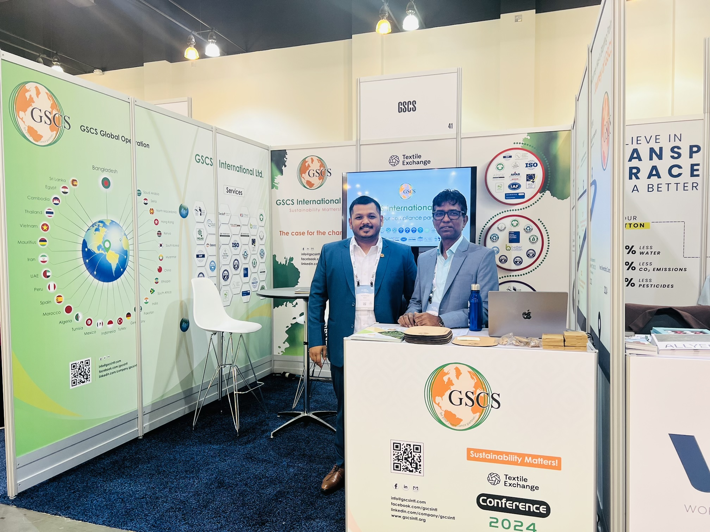
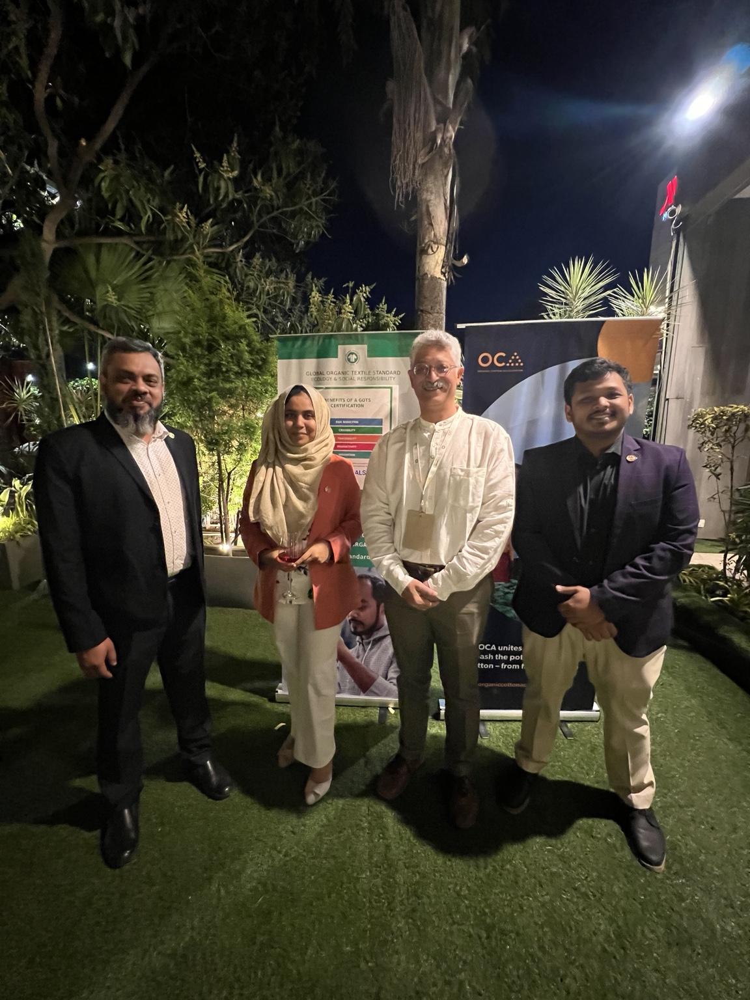
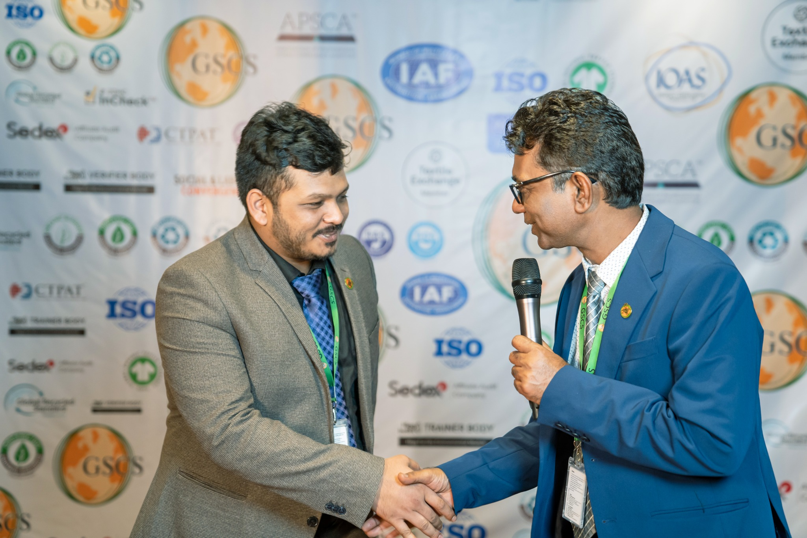
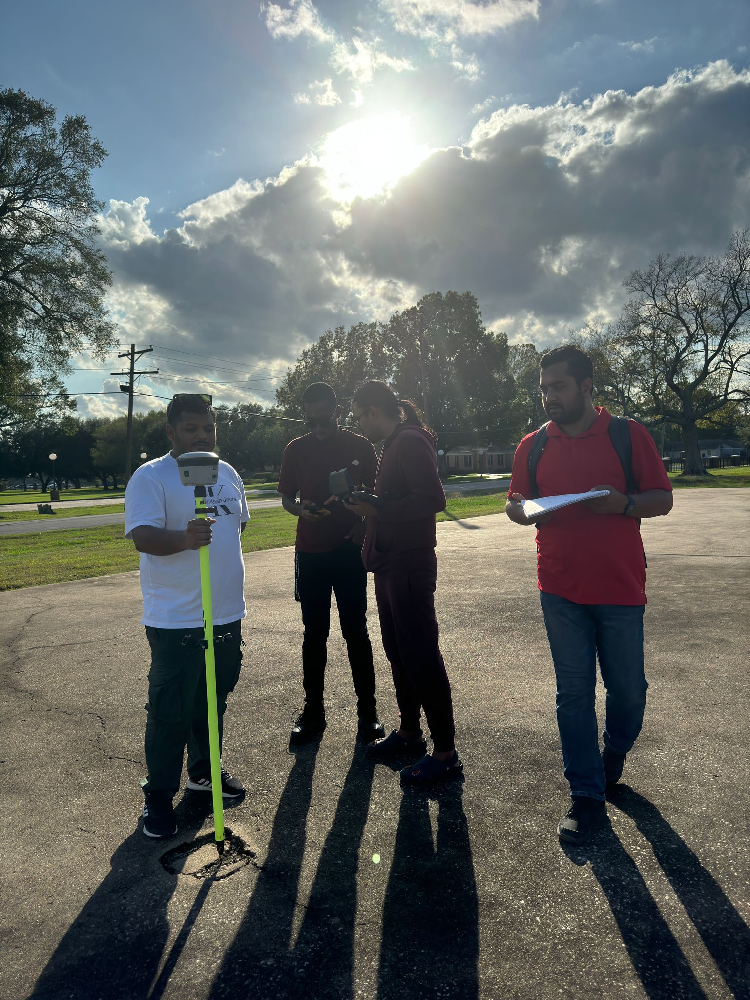
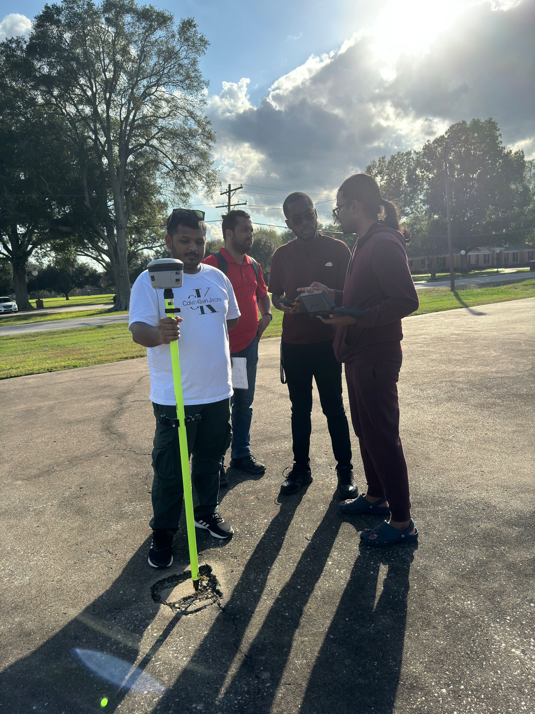

Professional engagement
Conferences, leadership, and environmental fieldwork.
Selected photographs that document professional sustainability engagement and applied geospatial learning.





Recognition · 2022
Best Team Leader of the Year
Recognition from GSCS International Ltd. for team leadership and professional contribution.
Media · Aug 17, 2026
Cleaner Water, Clearer Air
Published interview on environmental engineering, data, monitoring, water and air quality, and practical problem-solving.
Read interview ↗